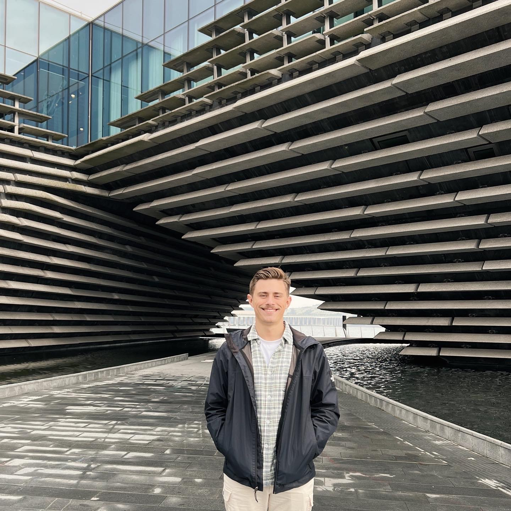

About Me

Return to Home
I am someone who lives to continue to learn and continue to gain new experiances. A little bit about me:
I am 22 years old, and grew up in Calgary, Canada
In high school I worked for both a drywall company and a food truck
After graduating from high school I worked briefly for an insurance brokerage
For 2 years I lived in Scotland as a missionary for The Church of Jesus Christ of Latter-day Saints
Some of my hobies include
Skiing
Watersports during the summer
Photography (surprise)
Pickle-Ball
I am currently a student at Brigham Young University, studying Business
Return to top